IMC data analysis and visualisation
Givanna Putri, Thomas O’neil
Last updated: 2025-11-26
Checks: 7 0
Knit directory:
2025_cytoconnect_spatial_workshop/
This reproducible R Markdown analysis was created with workflowr (version 1.7.2). The Checks tab describes the reproducibility checks that were applied when the results were created. The Past versions tab lists the development history.
Great! Since the R Markdown file has been committed to the Git repository, you know the exact version of the code that produced these results.
Great job! The global environment was empty. Objects defined in the global environment can affect the analysis in your R Markdown file in unknown ways. For reproduciblity it’s best to always run the code in an empty environment.
The command set.seed(20251002) was run prior to running
the code in the R Markdown file. Setting a seed ensures that any results
that rely on randomness, e.g. subsampling or permutations, are
reproducible.
Great job! Recording the operating system, R version, and package versions is critical for reproducibility.
Nice! There were no cached chunks for this analysis, so you can be confident that you successfully produced the results during this run.
Great job! Using relative paths to the files within your workflowr project makes it easier to run your code on other machines.
Great! You are using Git for version control. Tracking code development and connecting the code version to the results is critical for reproducibility.
The results in this page were generated with repository version 799934a. See the Past versions tab to see a history of the changes made to the R Markdown and HTML files.
Note that you need to be careful to ensure that all relevant files for
the analysis have been committed to Git prior to generating the results
(you can use wflow_publish or
wflow_git_commit). workflowr only checks the R Markdown
file, but you know if there are other scripts or data files that it
depends on. Below is the status of the Git repository when the results
were generated:
Ignored files:
Ignored: .DS_Store
Ignored: data/.DS_Store
Ignored: data/imc/
Ignored: data/visium/
Note that any generated files, e.g. HTML, png, CSS, etc., are not included in this status report because it is ok for generated content to have uncommitted changes.
These are the previous versions of the repository in which changes were
made to the R Markdown (analysis/imc_02.Rmd) and HTML
(docs/imc_02.html) files. If you’ve configured a remote Git
repository (see ?wflow_git_remote), click on the hyperlinks
in the table below to view the files as they were in that past version.
| File | Version | Author | Date | Message |
|---|---|---|---|---|
| Rmd | 799934a | Givanna Putri | 2025-11-26 | wflow_publish("analysis/imc_02.Rmd") |
| html | 2c126c8 | Givanna Putri | 2025-11-19 | Build site. |
| Rmd | 99c8f7b | Givanna Putri | 2025-11-19 | wflow_publish(c("analysis/imc_02.Rmd", "analysis//index.Rmd")) |
| html | 7fbdd99 | Givanna Putri | 2025-11-19 | Build site. |
| Rmd | 0706e91 | Givanna Putri | 2025-11-19 | wflow_publish(c("analysis/imc_02.Rmd", "analysis/visium_01.Rmd", |
Introduction
In this part of IMC data analysis workshop, we will explore some basic visualisation and analysis of IMC data using R.
Load libraries
library(ggplot2)
library(tidyverse)
library(here)
library(viridis)
library(uwot)
library(pheatmap)
# set default theme for ggplot
theme_set(theme_classic())The dataset
The data used for this tutorial is from 35-marker IMC panel on FFPE
human intestines. The paper describing the data:
https://doi.org/10.1002/cyto.a.24847. The panel is designed
to delineate various immune cell subsets and HIV RNA.
The data can be downloaded either from the Google drive link in the setup page or from Zenodo.
Loading the data
We will load the csv files containing single cell marker expression segmented using Qupath and ImageJ in the previous analysis step.
data <- read.csv(
file.path(here(), "data", "imc", "measurements.csv")
)
head(data) Image Object.ID Object.type Name
1 all_channels.tif 49557086-eb05-45cd-a628-5d378bbc6a92 Annotation NA
2 all_channels.tif 9f891fa0-7c59-41ab-a347-20ac13a6f78a Annotation NA
3 all_channels.tif 5f0b61a9-3de5-4d35-9deb-5e3edd67c5d7 Annotation NA
4 all_channels.tif 750f6c24-170f-422a-afa9-e58511c81f15 Annotation NA
5 all_channels.tif 90b3cccd-8d7d-46ce-8b52-d0983dd82146 Annotation NA
6 all_channels.tif 7798a9a2-23f4-4302-867c-30b69d266db4 Annotation NA
Classification Parent ROI Centroid.X.px Centroid.Y.px
1 Other Root object (Image) Polygon 2.821 2.393
2 Other Root object (Image) Polygon 14.360 3.449
3 Other Root object (Image) Polygon 25.950 5.873
4 Other Root object (Image) Polygon 39.220 8.127
5 Other Root object (Image) Polygon 116.890 5.784
6 Other Root object (Image) Polygon 131.760 3.577
Area.px.2 Perimeter.px ROI..1.00.px.per.pixel..aSMA.tif..Mean
1 28 22 0.2500
2 59 32 2.0508
3 166 66 1.4639
4 220 72 1.0545
5 250 78 0.3080
6 65 38 1.4154
ROI..1.00.px.per.pixel..Axl.tif..Mean ROI..1.00.px.per.pixel..CCR6.tif..Mean
1 0.1429 0.9643
2 0.2203 1.1864
3 0.3253 1.1145
4 0.2909 1.6500
5 0.2840 2.8080
6 0.2923 2.2615
ROI..1.00.px.per.pixel..CCR7.tif..Mean ROI..1.00.px.per.pixel..CD1c.tif..Mean
1 0.1071 0.0714
2 0.0339 0.1186
3 0.0181 0.0301
4 0.0545 0.0682
5 0.0560 0.1080
6 0.0769 0.0923
ROI..1.00.px.per.pixel..CD3.tif..Mean ROI..1.00.px.per.pixel..CD4.tif..Mean
1 0.1429 0.0000
2 0.3220 0.1186
3 1.0783 0.6566
4 0.2818 0.2318
5 0.2120 0.1440
6 0.7231 0.3077
ROI..1.00.px.per.pixel..CD8.tif..Mean ROI..1.00.px.per.pixel..CD11b.tif..Mean
1 0.0357 0.1429
2 0.0508 1.1864
3 0.0482 0.4518
4 0.2000 0.6091
5 0.3120 0.5760
6 0.0462 0.3385
ROI..1.00.px.per.pixel..CD11c.tif..Mean
1 0.1071
2 0.3390
3 0.8193
4 0.8227
5 0.1880
6 1.0308
ROI..1.00.px.per.pixel..CD14.tif..Mean ROI..1.00.px.per.pixel..CD20.tif..Mean
1 0.3571 0.1071
2 0.8814 0.2712
3 0.7892 0.1928
4 1.3045 0.1682
5 0.8960 0.1840
6 1.0769 2.2000
ROI..1.00.px.per.pixel..CD31.tif..Mean ROI..1.00.px.per.pixel..CD38.tif..Mean
1 0.1429 0.0357
2 0.5424 0.1695
3 0.0602 0.1506
4 0.1864 0.1182
5 0.0560 0.0720
6 0.1077 0.1692
ROI..1.00.px.per.pixel..CD45.tif..Mean
1 0.8214
2 1.4237
3 3.2952
4 2.5318
5 1.2640
6 2.3231
ROI..1.00.px.per.pixel..CD45RA.tif..Mean
1 0.1429
2 0.1017
3 0.1024
4 0.1318
5 0.1400
6 2.1846
ROI..1.00.px.per.pixel..CD45RO.tif..Mean
1 0.1429
2 1.1695
3 2.4759
4 0.4909
5 0.2440
6 1.2000
ROI..1.00.px.per.pixel..CD69.tif..Mean
1 0.0000
2 0.1356
3 0.3072
4 0.1636
5 0.2400
6 0.2154
ROI..1.00.px.per.pixel..CD163.tif..Mean
1 0.2857
2 0.5424
3 0.6988
4 0.6545
5 0.6600
6 0.7846
ROI..1.00.px.per.pixel..CD303.tif..Mean
1 0.0000
2 0.1695
3 0.1145
4 0.0727
5 0.1000
6 0.0923
ROI..1.00.px.per.pixel..CXCR3.tif..Mean
1 0.5000
2 0.5932
3 2.3373
4 1.2818
5 1.3400
6 1.7846
ROI..1.00.px.per.pixel..CXCR5.tif..Mean
1 0.1071
2 0.0169
3 0.0723
4 0.1500
5 0.1480
6 0.2769
ROI..1.00.px.per.pixel..DNA1.tif..Mean ROI..1.00.px.per.pixel..DNA2.tif..Mean
1 45.7143 81.5000
2 28.8305 47.7119
3 33.8012 58.4518
4 35.1455 60.2727
5 28.8040 48.4160
6 24.3692 37.3385
ROI..1.00.px.per.pixel..Ecadherin.tif..Mean
1 0.1071
2 0.2034
3 0.3916
4 3.3591
5 5.8040
6 0.4923
ROI..1.00.px.per.pixel..FOXP3.tif..Mean
1 0.4286
2 0.5932
3 0.5181
4 1.1818
5 1.7840
6 0.9538
ROI..1.00.px.per.pixel..FXIIIa.tif..Mean
1 0.7500
2 0.3220
3 0.8614
4 0.7091
5 0.1720
6 0.5846
ROI..1.00.px.per.pixel..HIV.tif..Mean ROI..1.00.px.per.pixel..HLADR.tif..Mean
1 0.0714 0.0000
2 0.0678 0.2542
3 0.1205 0.7349
4 0.1818 0.2500
5 0.1200 0.0960
6 0.1846 0.2308
ROI..1.00.px.per.pixel..IL17.tif..Mean ROI..1.00.px.per.pixel..Ki67.tif..Mean
1 0.0000 0.0714
2 0.0508 0.1017
3 0.1084 0.0783
4 0.1273 0.3045
5 0.1800 0.2680
6 0.2154 0.1231
ROI..1.00.px.per.pixel..La.tif..Mean
1 0.4643
2 0.2712
3 0.2831
4 0.2227
5 0.1760
6 0.2308
ROI..1.00.px.per.pixel..Langerin.tif..Mean
1 0.9286
2 1.5254
3 1.4277
4 2.1500
5 2.5800
6 1.2308
ROI..1.00.px.per.pixel..MPO.tif..Mean
1 0.0000
2 0.1695
3 0.0783
4 0.3682
5 0.1320
6 0.1385
ROI..1.00.px.per.pixel..NaKATPase.tif..Mean
1 0.5000
2 1.4576
3 1.8916
4 9.3955
5 12.7960
6 1.8308
ROI..1.00.px.per.pixel..Podoplanin.tif..Mean
1 0.2500
2 0.5424
3 1.5482
4 0.5136
5 0.1960
6 2.5231
ROI..1.00.px.per.pixel..Siglec1.tif..Mean
1 0.0357
2 0.1695
3 0.1265
4 0.1182
5 0.1200
6 0.0923There are a lot of information in the data frames. We have columns that describe:
- Centroid of the cells (
Centroid.X.px,Centroid.Y.px) - Area of the cells (
Area.px.2) - Mean marker expression (from column 12 onwards)
- Cell type label for the cell (
Classification), if you annotated some ROIs manually rather than just setting them all to “Other”.
The column names are not very user friendly, let’s clean them up.
cnames <- colnames(data)
# remove the rubbish prefixes
cnames <- gsub("^ROI..1.00.px.per.pixel..", "", cnames)
# remove the rubbish suffixes
cnames <- gsub(".tif..Mean" , "", cnames)
colnames(data) <- cnamesQuick visualisation to check that data acquired properly. This is just a scatter plot of cell centroids sized by cell surface area.
ggplot(data, aes(Centroid.X.px, Centroid.Y.px, size=Area.px.2)) +
geom_point()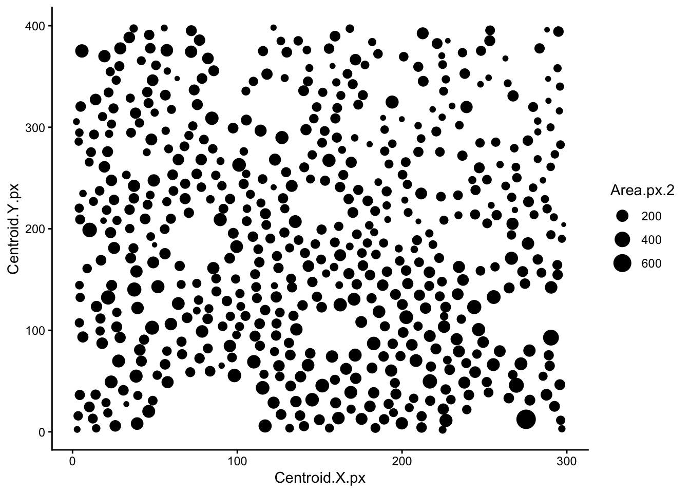
| Version | Author | Date |
|---|---|---|
| 7fbdd99 | Givanna Putri | 2025-11-19 |
Quick visualisation of raw marker expression across all cells. The code below will first convert the data to long format so we can plot all markers in one go. Then we will plot the density of expression for each marker.
# the markers start from column 12 to 48
# this just grabbed the column names for the markers
markers_cols <- colnames(data)[12:48]
# convert the data to long format so we can plot all markers in one go
marker_exp_long <- data %>%
select(all_of(markers_cols), Object.ID) %>%
pivot_longer(
cols = all_of(markers_cols),
names_to = "marker",
values_to = "raw_expression"
)
# plot the density of expression for each marker
ggplot(marker_exp_long, aes(x = raw_expression, color = marker, fill = marker)) +
geom_density(show.legend = FALSE, alpha = 0.5) +
facet_wrap(~ marker, scales = "free") +
labs(
title = "Marker expression distributions",
x = "Raw marker expression",
y = "Density"
) 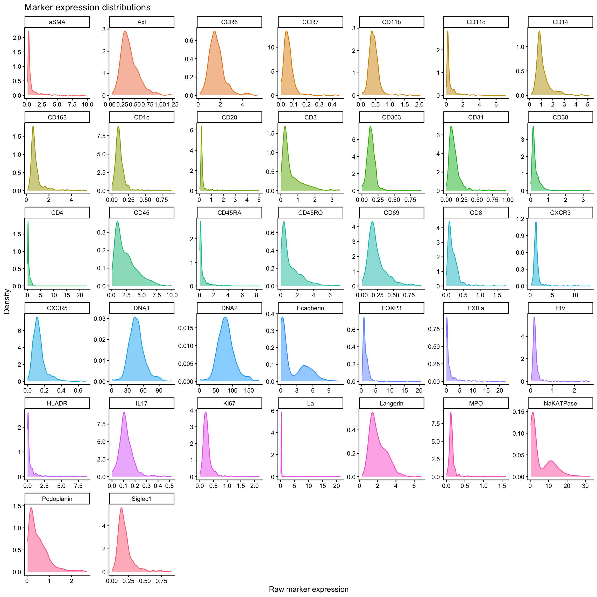
Data normalisation and scaling
We can either use arcsinh or log2 transformation (+1 in case we have 0 value as we can’t take log of 0) to normalise IMC data. Commonly, a co-factor of 1 is used if you are using arcsinh transformation.
We will do both transformation and compare them using density plots.
marker_exp_longer <- marker_exp_long %>%
mutate(
log2_expression = log2(raw_expression + 1),
arcsinh_expression = asinh(raw_expression / 1)
) %>%
pivot_longer(
cols = c(log2_expression, arcsinh_expression, raw_expression),
names_to = "transformation",
values_to = "transformed_expression"
)
ggplot(marker_exp_longer, aes(x = transformed_expression, color = transformation, fill = transformation)) +
geom_density(alpha = 0.3) +
facet_wrap(~ marker, scales = "free") +
labs(
title = "Comparing marker expression distributions after different transformations",
x = "Transformed marker expression",
y = "Density"
)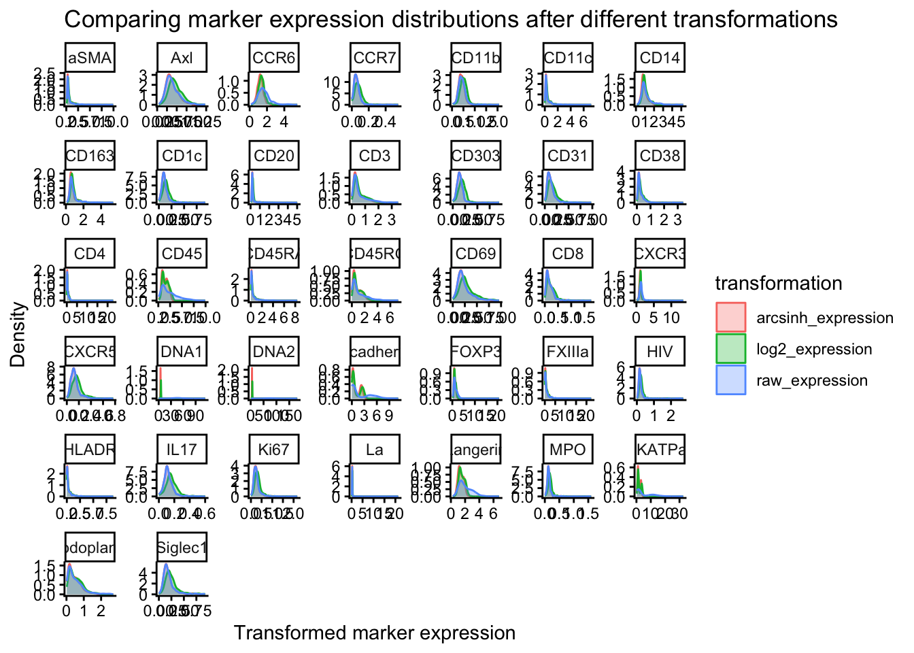
Unlike flow cytometry data, most IMC signal intensities don’t reach extremely large values. Many channels typically sit mostly between 0 and tens, sometimes hundreds. In this range, arcsinh and log transformations behave quite similarly, because arcsinh is approximately linear for small values, and log is only mildly curving in this range.
In some cases, however, the log transformation shifts the distribution to the right while the arcsinh transformation appears to do almost nothing. We see this in channels such as CXCR5, IL17, and Ki67 of our example above. This occurs when marker expression is very low across most cells. In this case, arcsinh still behaves linearly and therefore has little effect on the distribution, whereas the log transformation shifts values to the right due to the +1 offset added before taking the logarithm to avoid log(0).
In some cases, e.g., Ecadherin or CD45, we see both transformations exaggerating the bimodal distribution of the marker expression. This is because both arcsinh and log transformations compress high values while spreading out low values. Weakly separated subtypes which marker expression appear almost unimodal will appear more clearly bimodal after transformation. This is in keeping with what we do in flow cytometry analysis, where we use arcsinh transformations to deliberately expand the low end of the distribution (while compressing the top end) to better separate dimly positive and negative populations.
For the remainder of this tutorial, we will use just arcsinh transformation for normalisation.
raw_exp <- data %>% select(all_of(markers_cols))
normed_scaled_exp <- raw_exp %>%
mutate(across(all_of(markers_cols), ~ asinh(.x / 1))) %>% # arcsinh transformation
# mutate(across(all_of(markers_cols), ~ log2(.x + 1))) %>% # log2 transformation
mutate(Object.ID = data$Object.ID)
ggplot(normed_scaled_exp %>%
pivot_longer(
cols = all_of(markers_cols),
names_to = "marker",
values_to = "normed_expression"
), aes(x = normed_expression, color = marker, fill = marker)) +
geom_density(show.legend = FALSE, alpha = 0.5) +
facet_wrap(~ marker, scales = "free") +
labs(
title = "Marker expression distributions after arcsinh transformation",
x = "Normalized marker expression",
y = "Density"
)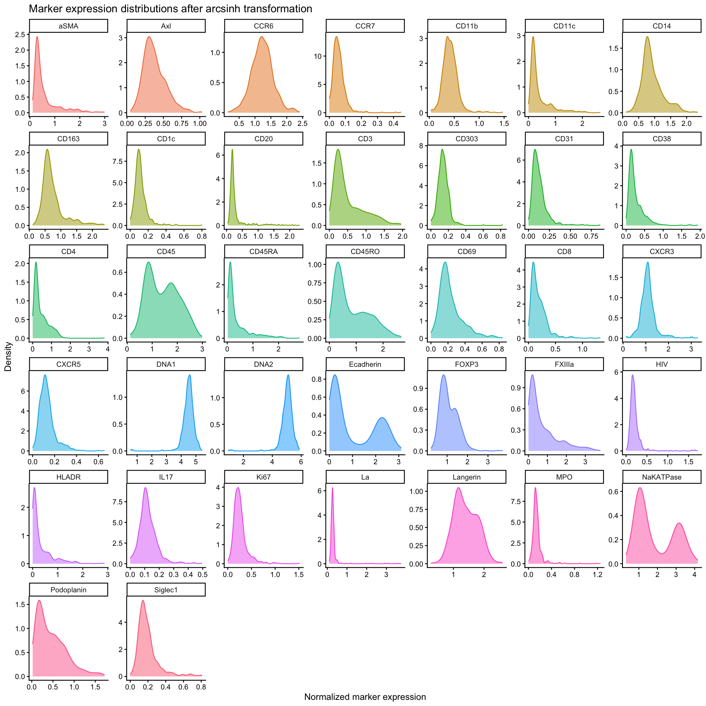
We will also remove cells in the top 0.3% of expression values for each marker as these are likely artefacts or aggregated antibodies.
# Remove cells where ANY marker has extreme high values (top 0.3%)
normed_exp_filtered <- normed_scaled_exp
thresholds <- lapply(markers_cols, function(marker) {
quantile(normed_scaled_exp[[marker]], probs = 0.997)
})
names(thresholds) <- markers_cols
# filter the data
for(marker in markers_cols) {
normed_exp_filtered <- normed_exp_filtered %>%
filter(.data[[marker]] <= thresholds[[marker]])
}
print(paste("Before filtering:", nrow(normed_scaled_exp), ". After filtering:", nrow(normed_exp_filtered)))[1] "Before filtering: 559 . After filtering: 506"Before proceeding, we will also scale the data to have mean of 0 and standard deviation of 1 for each marker.
normed_exp_filtered_scaled <- normed_exp_filtered %>%
mutate(across(all_of(markers_cols), ~ scale(.x)))
# plot distribution after normalisation and scaling
normed_exp_filtered_scaled %>%
pivot_longer(
cols = all_of(markers_cols),
names_to = "marker",
values_to = "normed_scaled_expression"
) %>%
ggplot(aes(x = normed_scaled_expression, color = marker, fill = marker)) +
geom_density(show.legend = FALSE, alpha = 0.5) +
facet_wrap(~ marker, scales = "free") +
labs(
title = "Marker expression distributions after arcsinh transformation and scaling",
x = "Normalized and scaled marker expression",
y = "Density"
)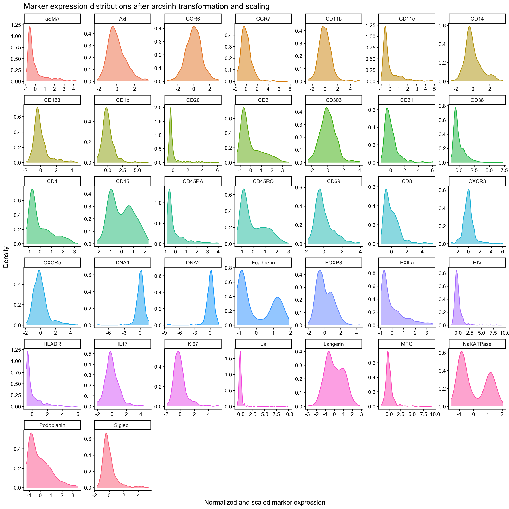
Dimensionality reduction and clustering
We can run UMAP and visualise the data in 2D space.
set.seed(123) # for reproducibility
cols_to_use <- c("aSMA", "CD14", "CD11c", "CD20", "CD3", "CD31", "CD45", "Ecadherin", "FXIIIa", "Ki67", "Podoplanin")
# the as.matrix converts the data frame to a matrix which umap function requires
# as.data.frame() converts the output back to a data frame
# setNames() renames the columns of the data frame to UMAP1 and UMAP2
umap_res <- umap(
normed_exp_filtered_scaled %>% select(all_of(cols_to_use)) %>% as.matrix()
) %>% as.data.frame() %>%
setNames(c("UMAP1", "UMAP2"))Use ggplot to visualise the umap plot, coloured by Ecadherin expression.
# add the Ecadherin expression to the umap results for plotting
umap_res$Ecadherin <- normed_exp_filtered_scaled$Ecadherin
ggplot(umap_res, aes(x=UMAP1, y=UMAP2, color = Ecadherin)) +
geom_point() +
scale_color_viridis_c(option = "D") +
labs(
title = "UMAP coloured by Ecadherin expression"
)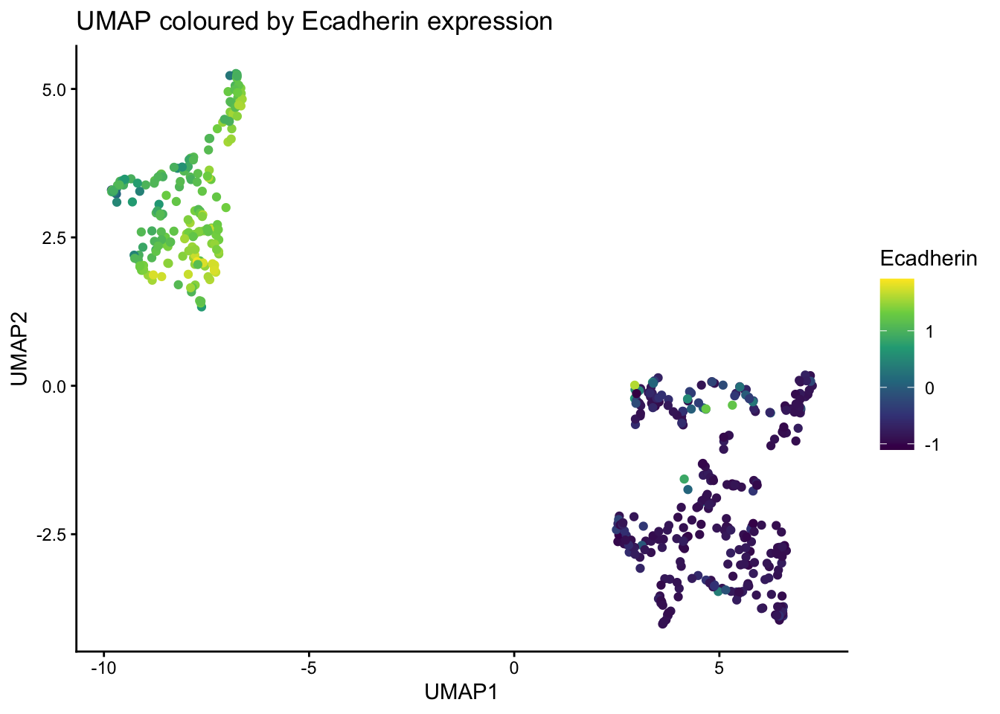
| Version | Author | Date |
|---|---|---|
| 7fbdd99 | Givanna Putri | 2025-11-19 |
Run clustering using k-means and visualise is on UMAP plot.
k <- kmeans(normed_exp_filtered_scaled %>% select(all_of(cols_to_use)), centers = 6)
umap_res <- umap_res %>%
mutate(cluster = as.factor(k$cluster))
ggplot(umap_res, aes(x=UMAP1, y=UMAP2, color = cluster)) +
geom_point() +
labs(
title = "UMAP coloured by k-means clusters"
)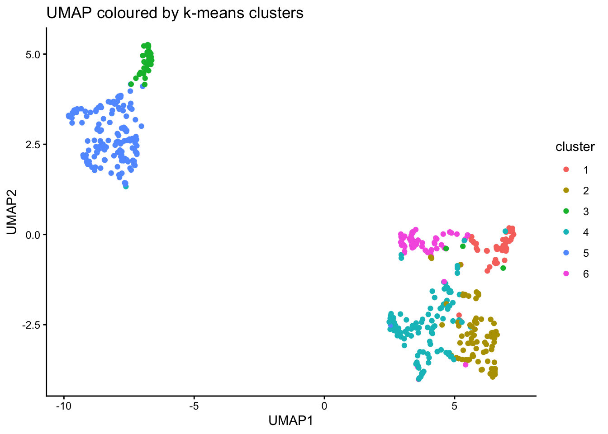
| Version | Author | Date |
|---|---|---|
| 7fbdd99 | Givanna Putri | 2025-11-19 |
Inspect distribution of Ecadherin expression across clusters.
normed_exp_filtered_scaled <- normed_exp_filtered_scaled %>%
mutate(cluster = as.factor(k$cluster))
ggplot(normed_exp_filtered_scaled, aes(x=Ecadherin, color=cluster)) +
geom_density() +
labs(
title = "Ecadherin expression distribution across clusters"
)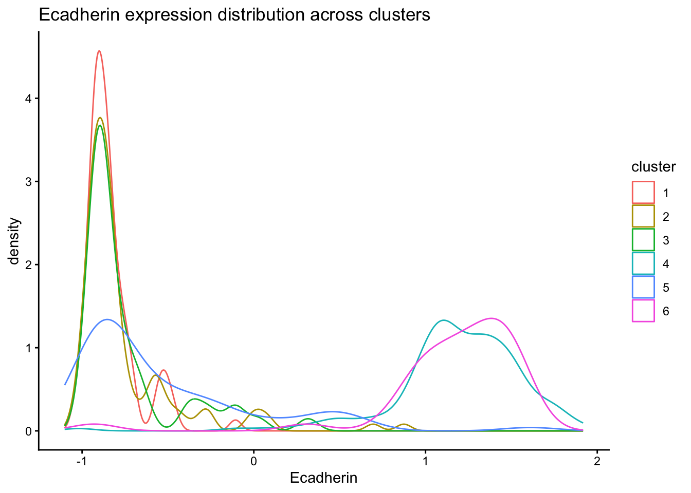
| Version | Author | Date |
|---|---|---|
| 7fbdd99 | Givanna Putri | 2025-11-19 |
Draw heatmap of mean marker expression per cluster.
normed_exp_filtered_scaled %>%
select(all_of(cols_to_use), cluster) %>%
group_by(cluster) %>%
summarise(across(all_of(cols_to_use), mean)) %>%
pivot_longer(cols = all_of(cols_to_use), names_to = "marker", values_to = "value") %>%
ggplot(aes(x=cluster, y=marker, fill=value)) +
geom_tile() +
scale_fill_viridis_c(option = "D") +
labs(
title = "Mean marker expression per cluster"
)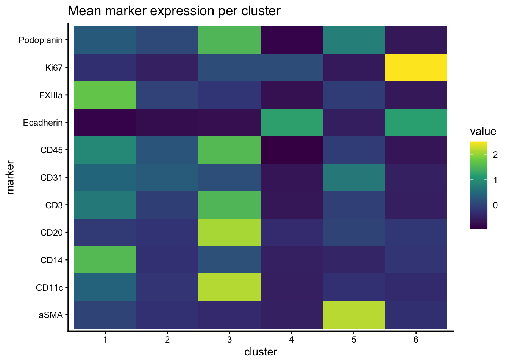
| Version | Author | Date |
|---|---|---|
| 7fbdd99 | Givanna Putri | 2025-11-19 |
Heatmap of marker expression for each cell annotated by cluster.
pheatmap(
normed_exp_filtered_scaled %>%
arrange(cluster, Object.ID) %>%
select(all_of(markers_cols), Object.ID) %>%
column_to_rownames("Object.ID") %>%
as.matrix(),
cluster_rows = FALSE,
cluster_cols = TRUE,
annotation_row = normed_exp_filtered_scaled %>%
arrange(cluster, Object.ID) %>%
select(cluster, Object.ID) %>%
column_to_rownames("Object.ID"),
show_colnames = TRUE,
show_rownames = FALSE,
main = "Heatmap of marker expression per cell annotated by cluster",
color = inferno(100)
)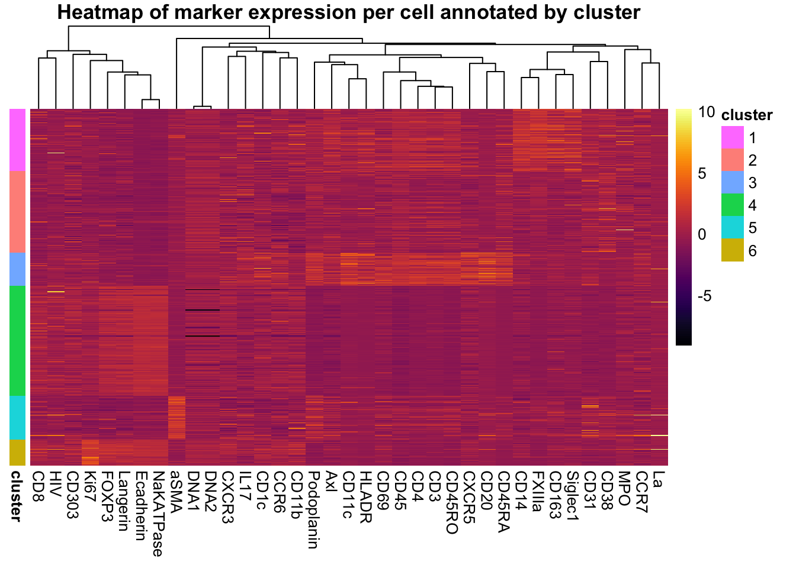
| Version | Author | Date |
|---|---|---|
| 7fbdd99 | Givanna Putri | 2025-11-19 |
Spatial distribution of clusters.
# add the cell spatial information back to the scaled normalised data
normed_exp_filtered_scaled <- normed_exp_filtered_scaled %>%
mutate(
X = data$Centroid.X.px[match(normed_exp_filtered_scaled$Object.ID, data$Object.ID)],
Y = data$Centroid.Y.px[match(normed_exp_filtered_scaled$Object.ID, data$Object.ID)],
Area = data$Area.px.2[match(normed_exp_filtered_scaled$Object.ID, data$Object.ID)]
)
ggplot(normed_exp_filtered_scaled, aes(X, Y, size=Area, color = cluster)) +
geom_point() +
scale_color_viridis_d(option = "H") +
labs(
title = "Spatial distribution of clusters"
)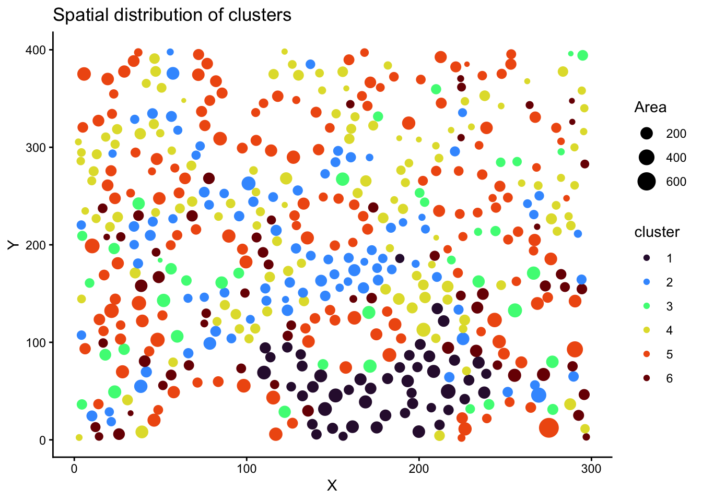
| Version | Author | Date |
|---|---|---|
| 7fbdd99 | Givanna Putri | 2025-11-19 |
Spatial distribution of marker expression (HIV). We use black blackground to accentuate the marker expression.
ggplot(normed_exp_filtered_scaled, aes(X, Y, size=Area, color = HIV)) +
geom_point() +
scale_color_viridis(option = "inferno") +
labs(
title = "Spatial distribution of HIV expression"
) +
guides(size = guide_legend(override.aes = list(color = "white"))) +
theme(
plot.background = element_rect(fill = "black"),
panel.background = element_rect(fill = "black"),
axis.text = element_text(color = "white"),
axis.title = element_text(color = "white"),
axis.ticks = element_line(color = "white"),
axis.line = element_line(color = "white"),
title = element_text(color = "white"),
legend.background = element_rect(fill = "black"),
legend.text = element_text(color = "white"),
legend.title = element_text(color = "white"),
)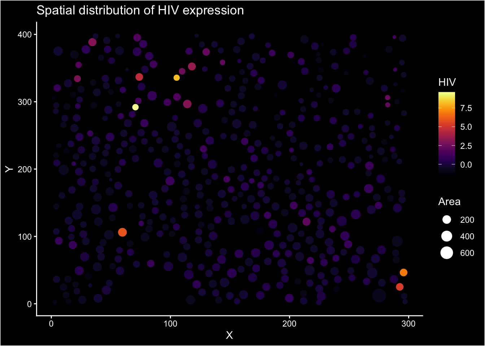
| Version | Author | Date |
|---|---|---|
| 7fbdd99 | Givanna Putri | 2025-11-19 |
All markers spatial distribution faceted plot.
normed_exp_filtered_scaled %>%
pivot_longer(cols = all_of(markers_cols), names_to = "marker", values_to = "expression") %>%
ggplot(aes(X, Y, size=Area, color = expression)) +
geom_point() +
scale_color_viridis_c(option = "inferno") +
labs(
title = "Spatial distribution of marker expressions"
) +
guides(size = guide_legend(override.aes = list(color = "white"))) +
facet_wrap(~marker, ncol = 5) +
theme(
plot.background = element_rect(fill = "black"),
panel.background = element_rect(fill = "black"),
axis.text = element_text(color = "white"),
axis.title = element_text(color = "white"),
axis.ticks = element_line(color = "white"),
axis.line = element_line(color = "white"),
title = element_text(color = "white"),
legend.background = element_rect(fill = "black"),
legend.text = element_text(color = "white"),
legend.title = element_text(color = "white"),
strip.background = element_rect(fill = "black", color = "white"),
strip.text = element_text(color = "white"),
)
Session Info
sessionInfo()R version 4.5.1 (2025-06-13)
Platform: aarch64-apple-darwin20
Running under: macOS Sequoia 15.5
Matrix products: default
BLAS: /Library/Frameworks/R.framework/Versions/4.5-arm64/Resources/lib/libRblas.0.dylib
LAPACK: /Library/Frameworks/R.framework/Versions/4.5-arm64/Resources/lib/libRlapack.dylib; LAPACK version 3.12.1
locale:
[1] en_US.UTF-8/en_US.UTF-8/en_US.UTF-8/C/en_US.UTF-8/en_US.UTF-8
time zone: Australia/Melbourne
tzcode source: internal
attached base packages:
[1] stats graphics grDevices utils datasets methods base
other attached packages:
[1] pheatmap_1.0.13 uwot_0.2.3 Matrix_1.7-3 viridis_0.6.5
[5] viridisLite_0.4.2 here_1.0.2 lubridate_1.9.4 forcats_1.0.0
[9] stringr_1.5.2 dplyr_1.1.4 purrr_1.1.0 readr_2.1.5
[13] tidyr_1.3.1 tibble_3.3.0 tidyverse_2.0.0 ggplot2_4.0.0
[17] workflowr_1.7.2
loaded via a namespace (and not attached):
[1] sass_0.4.10 generics_0.1.4 lattice_0.22-7 stringi_1.8.7
[5] hms_1.1.3 digest_0.6.37 magrittr_2.0.4 timechange_0.3.0
[9] evaluate_1.0.5 grid_4.5.1 RColorBrewer_1.1-3 fastmap_1.2.0
[13] rprojroot_2.1.1 jsonlite_2.0.0 processx_3.8.6 whisker_0.4.1
[17] gridExtra_2.3 ps_1.9.1 promises_1.3.3 httr_1.4.7
[21] scales_1.4.0 jquerylib_0.1.4 cli_3.6.5 rlang_1.1.6
[25] withr_3.0.2 cachem_1.1.0 yaml_2.3.10 FNN_1.1.4.1
[29] tools_4.5.1 tzdb_0.5.0 httpuv_1.6.16 vctrs_0.6.5
[33] R6_2.6.1 lifecycle_1.0.4 git2r_0.36.2 fs_1.6.6
[37] irlba_2.3.5.1 pkgconfig_2.0.3 callr_3.7.6 pillar_1.11.0
[41] bslib_0.9.0 later_1.4.4 gtable_0.3.6 glue_1.8.0
[45] Rcpp_1.1.0 xfun_0.53 tidyselect_1.2.1 rstudioapi_0.17.1
[49] knitr_1.50 dichromat_2.0-0.1 farver_2.1.2 htmltools_0.5.8.1
[53] labeling_0.4.3 rmarkdown_2.29 compiler_4.5.1 getPass_0.2-4
[57] S7_0.2.0
sessionInfo()R version 4.5.1 (2025-06-13)
Platform: aarch64-apple-darwin20
Running under: macOS Sequoia 15.5
Matrix products: default
BLAS: /Library/Frameworks/R.framework/Versions/4.5-arm64/Resources/lib/libRblas.0.dylib
LAPACK: /Library/Frameworks/R.framework/Versions/4.5-arm64/Resources/lib/libRlapack.dylib; LAPACK version 3.12.1
locale:
[1] en_US.UTF-8/en_US.UTF-8/en_US.UTF-8/C/en_US.UTF-8/en_US.UTF-8
time zone: Australia/Melbourne
tzcode source: internal
attached base packages:
[1] stats graphics grDevices utils datasets methods base
other attached packages:
[1] pheatmap_1.0.13 uwot_0.2.3 Matrix_1.7-3 viridis_0.6.5
[5] viridisLite_0.4.2 here_1.0.2 lubridate_1.9.4 forcats_1.0.0
[9] stringr_1.5.2 dplyr_1.1.4 purrr_1.1.0 readr_2.1.5
[13] tidyr_1.3.1 tibble_3.3.0 tidyverse_2.0.0 ggplot2_4.0.0
[17] workflowr_1.7.2
loaded via a namespace (and not attached):
[1] sass_0.4.10 generics_0.1.4 lattice_0.22-7 stringi_1.8.7
[5] hms_1.1.3 digest_0.6.37 magrittr_2.0.4 timechange_0.3.0
[9] evaluate_1.0.5 grid_4.5.1 RColorBrewer_1.1-3 fastmap_1.2.0
[13] rprojroot_2.1.1 jsonlite_2.0.0 processx_3.8.6 whisker_0.4.1
[17] gridExtra_2.3 ps_1.9.1 promises_1.3.3 httr_1.4.7
[21] scales_1.4.0 jquerylib_0.1.4 cli_3.6.5 rlang_1.1.6
[25] withr_3.0.2 cachem_1.1.0 yaml_2.3.10 FNN_1.1.4.1
[29] tools_4.5.1 tzdb_0.5.0 httpuv_1.6.16 vctrs_0.6.5
[33] R6_2.6.1 lifecycle_1.0.4 git2r_0.36.2 fs_1.6.6
[37] irlba_2.3.5.1 pkgconfig_2.0.3 callr_3.7.6 pillar_1.11.0
[41] bslib_0.9.0 later_1.4.4 gtable_0.3.6 glue_1.8.0
[45] Rcpp_1.1.0 xfun_0.53 tidyselect_1.2.1 rstudioapi_0.17.1
[49] knitr_1.50 dichromat_2.0-0.1 farver_2.1.2 htmltools_0.5.8.1
[53] labeling_0.4.3 rmarkdown_2.29 compiler_4.5.1 getPass_0.2-4
[57] S7_0.2.0